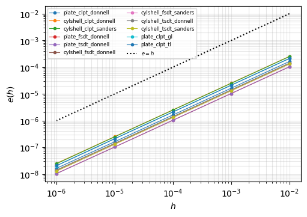

Tangent stiffness matrix and its product by a vector: verification and cost#
The geometrically non-linear analyses of panels need the internal force vector \(\boldsymbol{F}_{int}(\boldsymbol{c})\) of `Shell.calc_fint <../shell.rst>`__, the tangent stiffness matrix \(\boldsymbol{K}_T = \partial
\boldsymbol{F}_{int}/\partial \boldsymbol{c}\) of `Shell.calc_kT <../shell.rst>`__, and, for the prescribed displacements imposed exactly, the product \(\boldsymbol{K}_T \boldsymbol{v}\) of `Shell.calc_kTv <../shell.rst>`__, computed without assembling \(\boldsymbol{K}_T\). The theory is in Tangent stiffness matrix and its product by a vector and the structure of the kernels in Approximation functions tabulated at the integration
points.
This notebook
rebuilds, for the classical laminated plate theory with the Donnell kinematics, the operators \(\boldsymbol{B}_L\), \(\boldsymbol{B}_{NL}\) and \(\boldsymbol{G}\) from the Bardell functions, and compares the matrices and the vector of the equations with those of the compiled kernels;
checks that \(\boldsymbol{K}_T\) and \(\boldsymbol{K}_T \boldsymbol{v}\) are the derivative of \(\boldsymbol{F}_{int}\) with a Taylor test, for all the non-linear models;
measures the cost of the assembly, of the internal force vector and of the product, and the run time of a displacement-controlled post-buckling analysis.
All times are measured on the machine that executed this notebook (for the stored outputs: one core of a node of the hpc12 cluster), with one thread.
[1]:
%matplotlib inline
import os
import sys
import time
import numpy as np
import matplotlib.pyplot as plt
from numpy.polynomial.legendre import leggauss
from IPython.display import Markdown, display
from structsolve import Analysis
import panels.bardell as bardell
from panels import modelDB
from panels.shell import Shell
from panels.multidomain import MultiDomain
sys.path.insert(0, os.path.join('..', 'tests', 'tests_shell'))
sys.path.insert(0, os.path.join('..', 'tests', 'multidomain'))
from test_tangent_consistency import MODELS, make_shell, random_state
from test_null_space_pd import plate_postbuckling
def table(headers, rows):
lines = ['| ' + ' | '.join(headers) + ' |', '|' + '---|'*len(headers)]
lines += ['| ' + ' | '.join(str(v) for v in row) + ' |' for row in rows]
display(Markdown('\n'.join(lines)))
def rel(A, B):
A = A.toarray() if hasattr(A, 'toarray') else np.asarray(A)
B = B.toarray() if hasattr(B, 'toarray') else np.asarray(B)
return np.abs(A - B).max()/np.abs(B).max()
def median_time(func, repeat):
func() # warm-up
times = []
for _ in range(repeat):
t0 = time.perf_counter()
func()
times.append(time.perf_counter() - t0)
return np.median(times)
1. The operators of the Donnell kinematics, rebuilt#
With the Bardell functions \(P_i\) and the natural coordinates \(\xi = 2x/a - 1\), \(\eta = 2y/b - 1\), the displacements are \(u = \boldsymbol{S}^u \boldsymbol{c}\), \(v = \boldsymbol{S}^v \boldsymbol{c}\), \(w = \boldsymbol{S}^w \boldsymbol{c}\), with \(S^u_{3(jm+i)} = P_i^u(\xi) P_j^u(\eta)\), \(S^v_{3(jm+i)+1}\) and \(S^w_{3(jm+i)+2}\) alike, each function with the boundary flags of its displacement component (calc_vec_f, calc_vec_fp,
calc_vec_fpp of panels.bardell). The strains of the Donnell kinematics, the plate being the limit \(1/r = 0\), are
and, with the laminate stiffness \(\boldsymbol{C}\) and \(\tilde{\boldsymbol{N}}\) the \(2 \times 2\) matrix of the membrane forces,
calc_kC(c, NLgeom=True) (kernel fkC_num) returns the first integral plus the geometric stiffness of the non-linear membrane forces \(\boldsymbol{N}_{NL} = \boldsymbol{A} \{w_{,x}^2/2,\ w_{,y}^2/2,\ w_{,x} w_{,y}\}\), and calc_kG(c) (kernel fkG_num) the geometric stiffness of the linear membrane forces \(\boldsymbol{N}_L\), so that their sum is \(\boldsymbol{K}_T\). Below, the integrals are evaluated in Python with \(10 \times 10\) Gauss-Legendre points, for
\(m = n = 4\) terms, an unsymmetric laminate \([30/-45/0/90]\) (so that \(\boldsymbol{B} \ne \boldsymbol{0}\) and \(A_{16},
A_{26} \ne 0\)) and a random state with deflections of about twenty thicknesses, and compared with the kernels. The closed-form kernels of the linear matrices, fk0 and fkG0, are compared with the numerical ones at \(\boldsymbol{c} =
\boldsymbol{0}\), integrated exactly with \(30 \times 30\) points.
[2]:
def operators(s, xi, eta):
r'''S^u, S^v, S^w and their derivatives in x, y at one point, rows of size 3 m n'''
m, n = s.m, s.n
size = 3*m*n
out = {}
for k, f in enumerate('uvw'):
fx = [np.asarray(g(xi, *(getattr(s, 'x1' + f), getattr(s, 'x1' + f + 'r'),
getattr(s, 'x2' + f), getattr(s, 'x2' + f + 'r'))))[:m]
for g in (bardell.calc_vec_f, bardell.calc_vec_fp, bardell.calc_vec_fpp)]
gy = [np.asarray(g(eta, *(getattr(s, 'y1' + f), getattr(s, 'y1' + f + 'r'),
getattr(s, 'y2' + f), getattr(s, 'y2' + f + 'r'))))[:n]
for g in (bardell.calc_vec_f, bardell.calc_vec_fp, bardell.calc_vec_fpp)]
for name, dx, dy, scale in (('', 0, 0, 1.), ('x', 1, 0, 2/s.a), ('y', 0, 1, 2/s.b),
('xx', 2, 0, 4/s.a**2), ('yy', 0, 2, 4/s.b**2), ('xy', 1, 1, 4/(s.a*s.b))):
row = np.zeros(size)
# column 3 (j m + i) + k
row[k::3] = scale*np.outer(gy[dy], fx[dx]).ravel()
out[f + name] = row
return out
def rebuilt(s, c, nx=10, ny=10):
size = s.get_size()
C = np.asarray(s.ABD)
A = C[:3, :3]
invr = 0. if s.r is None else 1./s.r
KC = np.zeros((size, size))
KG = np.zeros((size, size))
fint = np.zeros(size)
px, wx = leggauss(nx)
py, wy = leggauss(ny)
for xi, wi in zip(px, wx):
for eta, wj in zip(py, wy):
S = operators(s, xi, eta)
BL = np.array([S['ux'], S['vy'] + invr*S['w'], S['uy'] + S['vx'],
-S['wxx'], -S['wyy'], -2*S['wxy']])
G = np.array([S['wx'], S['wy']])
wxc, wyc = G @ c
BNL = np.zeros_like(BL)
BNL[0] = wxc*G[0]
BNL[1] = wyc*G[1]
BNL[2] = wyc*G[0] + wxc*G[1]
weight = wi*wj*s.a*s.b/4
eps = (BL + 0.5*BNL) @ c
sigma = C @ eps
NL = (C @ (BL @ c))[:3]
NNL = A @ np.array([wxc**2/2, wyc**2/2, wxc*wyc])
Ntil = lambda N: np.array([[N[0], N[2]], [N[2], N[1]]])
B = BL + BNL
KC += weight*(B.T @ C @ B + G.T @ Ntil(NNL) @ G)
KG += weight*(G.T @ Ntil(NL) @ G)
fint += weight*(B.T @ sigma)
return KC, KG, fint
rows = []
for model in ('plate_clpt_donnell', 'cylshell_clpt_donnell'):
s = make_shell(model)
s.m = s.n = 4
s._rebuild()
c = random_state(s, np.random.default_rng(1))
KC, KG, fint = rebuilt(s, c)
r = [rel(s.calc_kC(c=c, NLgeom=True, nx=10, ny=10), KC),
rel(s.calc_kG(c=c, nx=10, ny=10), KG),
rel(s.calc_fint(c, nx=10, ny=10), fint)]
zero = np.zeros(s.get_size())
r.append(rel(s.calc_kC(c=zero, nx=30, ny=30), s.calc_kC()))
s.Nxx, s.Nyy, s.Nxy = -1.e3, -0.5e3, 0.2e3
r.append(rel(s.calc_kG(c=zero, nx=30, ny=30), s.calc_kG()))
rows.append(r)
names = [('`fkC_num`', 'first integral + $\\boldsymbol{K}_G(\\boldsymbol{N}_{NL})$'),
('`fkG_num`', '$\\boldsymbol{K}_G(\\boldsymbol{N}_L)$'),
('`calc_fint`', '$\\boldsymbol{F}_{int}$'),
('`fk0`', '`fkC_num` at $\\boldsymbol{c} = \\boldsymbol{0}$, $30 \\times 30$ points'),
('`fkG0`', '`fkG_num` at $\\boldsymbol{c} = \\boldsymbol{0}$, constant $N_{xx}, N_{yy}, N_{xy}$, '
'$30 \\times 30$ points')]
table(['kernel', 'compared with', 'plate', 'cylinder'],
[[k, e, '%.1e' % rows[0][i], '%.1e' % rows[1][i]] for i, (k, e) in enumerate(names)])
kernel |
compared with |
plate |
cylinder |
|---|---|---|---|
|
first integral + \(\boldsymbol{K}_G(\boldsymbol{N}_{NL})\) |
8.8e-16 |
1.1e-15 |
|
\(\boldsymbol{K}_G(\boldsymbol{N}_L)\) |
2.1e-15 |
1.8e-15 |
|
\(\boldsymbol{F}_{int}\) |
1.2e-15 |
1.7e-15 |
|
|
5.3e-15 |
5.1e-15 |
|
|
1.0e-14 |
1.0e-14 |
The relative differences, largest entry of the difference over the largest entry, are at the round-off level: the kernels compute the equations above, and the closed-form and the numerically integrated linear matrices agree once the quadrature integrates the polynomials exactly.
2. Consistency: Taylor tests#
For an arbitrary state \(\boldsymbol{c}\) and direction \(\boldsymbol{v}\), \(\boldsymbol{F}_{int}(\boldsymbol{c} + h\boldsymbol{v}) = \boldsymbol{F}_{int}(\boldsymbol{c}) + h \boldsymbol{K}_T(\boldsymbol{c}) \boldsymbol{v} + O(h^2)\), so the relative remainder
falls proportionally to \(h\) when \(\boldsymbol{K}_T\) is the Jacobian, and stalls otherwise. The test is done for every geometrically non-linear model with the product calc_kTv, and the product is compared with calc_kT(c) @ v. The shells are those of the test module test_tangent_consistency.py: \(0.3 \times 0.2\) m, \(r = 0.4\) m for the cylinders, \([30/-45/0/90]\), \(5 \times 5\) terms, \(8 \times 8\) points.
[3]:
steps = [1e-2, 1e-3, 1e-4, 1e-5, 1e-6]
rows = []
taylor = {}
for model in MODELS:
s = make_shell(model)
rng = np.random.default_rng(0)
c = random_state(s, rng)
v = random_state(s, rng)
f0 = s.calc_fint(c)
kTv = s.calc_kTv(c, v)
e = [np.linalg.norm(s.calc_fint(c + h*v) - f0 - h*kTv)/np.linalg.norm(h*kTv) for h in steps]
taylor[model] = e
rows.append(['`%s`' % model, '%.1e' % rel(kTv, s.calc_kT(c=c) @ v)] + ['%.1e' % x for x in e]
+ ['%.2f' % (max(x/h for x, h in zip(e, steps))/min(x/h for x, h in zip(e, steps)))])
table(['model', '`calc_kTv` vs `calc_kT @ v`'] + ['$e(%g)$' % h for h in steps] + ['spread of $e/h$'], rows)
fig, ax = plt.subplots(figsize=(5.5, 3.8))
for model, e in taylor.items():
ax.loglog(steps, e, '.-', lw=0.8, label=model)
ax.loglog(steps, steps, 'k:', label='$e = h$')
ax.set_xlabel('$h$')
ax.set_ylabel('$e(h)$')
ax.grid(alpha=0.3, which='both')
ax.legend(fontsize=6, ncol=2)
plt.show()
model |
|
\(e(0.01)\) |
\(e(0.001)\) |
\(e(0.0001)\) |
\(e(1e-05)\) |
\(e(1e-06)\) |
spread of \(e/h\) |
|---|---|---|---|---|---|---|---|
|
6.7e-16 |
1.6e-04 |
1.6e-05 |
1.6e-06 |
1.6e-07 |
1.6e-08 |
1.01 |
|
7.7e-16 |
2.5e-04 |
2.5e-05 |
2.5e-06 |
2.5e-07 |
2.5e-08 |
1.01 |
|
1.9e-15 |
2.5e-04 |
2.5e-05 |
2.5e-06 |
2.5e-07 |
2.5e-08 |
1.02 |
|
2.3e-16 |
1.0e-04 |
1.0e-05 |
1.0e-06 |
1.0e-07 |
1.1e-08 |
1.02 |
|
7.9e-16 |
1.0e-04 |
1.0e-05 |
1.0e-06 |
1.0e-07 |
1.0e-08 |
1.01 |
|
2.5e-16 |
1.4e-04 |
1.4e-05 |
1.4e-06 |
1.4e-07 |
1.4e-08 |
1.00 |
|
9.9e-16 |
1.3e-04 |
1.3e-05 |
1.3e-06 |
1.3e-07 |
1.3e-08 |
1.01 |
|
3.3e-16 |
1.4e-04 |
1.4e-05 |
1.4e-06 |
1.4e-07 |
1.4e-08 |
1.01 |
|
2.5e-16 |
1.3e-04 |
1.3e-05 |
1.3e-06 |
1.3e-07 |
1.3e-08 |
1.01 |
|
2.7e-16 |
2.1e-04 |
2.1e-05 |
2.1e-06 |
2.1e-07 |
2.1e-08 |
1.03 |
|
5.4e-16 |
2.1e-04 |
2.1e-05 |
2.1e-06 |
2.1e-07 |
2.1e-08 |
1.02 |

The remainder falls by ten per decade of \(h\) for every model, \(e(h)/h\) being nearly constant, and the product equals the assembled matrix times the vector to round-off.
3. Cost of the assembly and of the product#
Single shell, \(0.3 \times 0.2\) m, \(r = 0.4\) m for the cylinder, laminate \([0/45/-45/90]\), the default integration points of panels.shell.gauss_points, \(\max(2m - 1, 7)\) by \(\max(2n - 1, 7)\), the random state of section 2. Medians of 5 samples after a warm-up (3 for calc_kT); ratio: calc_kT over calc_kTv. The assembly of \(\boldsymbol{K}_T\) loops over the \(m^2 n^2\) pairs of terms at each integration point, the internal force vector and the
product over the \(m n\) terms, so that the ratio grows with the number of terms.
[4]:
def perf_shell(model, m):
s = make_shell(model)
s.stack = [0, 45, -45, 90]
s.m = s.n = m
s.nx = s.ny = None
s._rebuild()
return s
perf = {}
rows = []
for model in ('plate_clpt_donnell', 'cylshell_fsdt_sanders', 'plate_tsdt_donnell'):
for m in (8, 12, 16):
s = perf_shell(model, m)
rng = np.random.default_rng(0)
c = random_state(s, rng)
v = random_state(s, rng)
tkT = median_time(lambda: s.calc_kT(c=c), 3)
tf = median_time(lambda: s.calc_fint(c), 5)
tv = median_time(lambda: s.calc_kTv(c, v), 5)
d = rel(s.calc_kTv(c, v), s.calc_kT(c=c) @ v)
perf[(model, m)] = (tkT, tf, tv)
rows.append(['`%s`' % model, m, s.get_size(), '%d x %d' % (s.nx, s.ny), '%.3g s' % tkT, '%.3g ms' % (1e3*tf),
'%.3g ms' % (1e3*tv), '%.0f' % (tkT/tv), '%.2f' % (tv/tf), '%.1e' % d])
table(['model', '$m = n$', 'size', 'points', '`calc_kT`', '`calc_fint`', '`calc_kTv`', 'ratio',
'`calc_kTv`/`calc_fint`', 'difference'], rows)
model |
\(m = n\) |
size |
points |
|
|
|
ratio |
|
difference |
|---|---|---|---|---|---|---|---|---|---|
|
8 |
192 |
15 x 15 |
0.053 s |
2.59 ms |
2.92 ms |
18 |
1.13 |
2.9e-16 |
|
12 |
432 |
23 x 23 |
0.588 s |
14 ms |
16 ms |
37 |
1.14 |
6.9e-16 |
|
16 |
768 |
31 x 31 |
3.27 s |
48.7 ms |
54.6 ms |
60 |
1.12 |
7.0e-16 |
|
8 |
320 |
15 x 15 |
0.221 s |
4.18 ms |
4.62 ms |
48 |
1.11 |
5.9e-16 |
|
12 |
720 |
23 x 23 |
2.43 s |
23.2 ms |
25 ms |
97 |
1.08 |
6.3e-16 |
|
16 |
1280 |
31 x 31 |
13.7 s |
80.8 ms |
85.1 ms |
161 |
1.05 |
5.3e-16 |
|
8 |
320 |
15 x 15 |
0.317 s |
4.45 ms |
4.89 ms |
65 |
1.10 |
1.0e-15 |
|
12 |
720 |
23 x 23 |
3.62 s |
24.3 ms |
26.6 ms |
136 |
1.09 |
7.6e-16 |
|
16 |
1280 |
31 x 31 |
20.5 s |
83.9 ms |
91.2 ms |
224 |
1.09 |
1.1e-15 |
Kernels of the other matrices#
The same shells, \(m = n = 12\), with a follower pressure of \(-2 \times 10^4\) Pa: run times of the non-linear constitutive matrix (calc_kC(c, NLgeom=True), kernel fkC_num), the geometric stiffness matrix (calc_kG(c), fkG_num), the internal force vector, the load stiffness of the follower pressure (calc_kCfollower, fkCfollower_num) and the mass matrix integrated numerically with a thickness per integration point (calc_kM with h_nxny, fkM_num). Each
kernel evaluates the approximation functions once per integration point and term, in a table read by the loops over the terms.
[5]:
rows = []
for model in ('plate_clpt_donnell', 'cylshell_fsdt_sanders', 'plate_tsdt_donnell'):
s = perf_shell(model, 12)
s.rho = 1600.
s.add_pressure_load(-2.e4, follower='linear')
c = random_state(s, np.random.default_rng(0))
h_nxny = np.full((s.nx, s.ny), s.lam.h)
times = [median_time(lambda: s.calc_kC(c=c, NLgeom=True), 3),
median_time(lambda: s.calc_kG(c=c), 3),
median_time(lambda: s.calc_fint(c), 5),
median_time(lambda: s.calc_kCfollower(c=c), 3),
median_time(lambda: s.calc_kM(h_nxny=h_nxny), 3)]
rows.append(['`%s`' % model] + ['%.3g s' % t for t in times])
table(['model, $m = n = 12$', '`fkC_num`', '`fkG_num`', '`calc_fint`', '`fkCfollower_num`', '`fkM_num`'], rows)
model, \(m = n = 12\) |
|
|
|
|
|
|---|---|---|---|---|---|
|
0.786 s |
0.0567 s |
0.0264 s |
0.251 s |
0.133 s |
|
2.72 s |
0.124 s |
0.0356 s |
0.409 s |
0.135 s |
|
3.79 s |
0.0648 s |
0.0368 s |
0.255 s |
0.714 s |
4. Displacement-controlled post-buckling#
The simply supported isotropic plate of the test module test_null_space_pd.py (\(a = 0.3\) m, \(b = 0.2\) m, \(h = 1\) mm, \(E = 70\) GPa), \(m = n = 12\) terms, under an end-shortening of three times the critical one of its linear buckling analysis, imposed exactly with the null-space method, with a lateral point load of 2 N as imperfection. The reduced problem of `MultiDomain.get_reduced_functions <../multidomain.rst>`__ needs, at each assembly of the tangent
stiffness matrix, \(\partial \boldsymbol{R}_r/\partial \lambda = -\boldsymbol{Z}^\top (\boldsymbol{F}_{ext} - \boldsymbol{K}_T
\boldsymbol{c}_{p1})\), computed with the product. Run time of Analysis.static, median of 3 runs, with the Newton-Raphson method, the modified Newton-Raphson method (modified_NR = True) and Riks’s arc-length method, with Crisfield’s convergence criterion (the default, relTOL = 1e-9) and with the relative one (relTOL = 1e-6), and the number of assemblies of \(\boldsymbol{K}_T\) and the axial reaction at \(\lambda = 1\).
[6]:
import functools
def postbuckling(method, criterion, relTOL):
md, p, delta = plate_postbuckling(m=12, n=12)
fext, fint, kC, kG = md.get_reduced_functions()
n = {'kC': 0}
@functools.wraps(kC)
def ckC(*args, **kwargs):
n['kC'] += 1
return kC(*args, **kwargs)
an = Analysis(fext, fint, ckC, kG)
an.convergence = criterion
an.relTOL = relTOL
if method == 'modified NR':
an.modified_NR = True
elif method == 'Riks':
an.NL_method = 'arc_length_riks'
an.initialInc = 0.2
an.maxArcLength = 100.
t0 = time.perf_counter()
an.static(NLgeom=True, silent=True)
t = time.perf_counter() - t0
F = md.reaction_resultant(md.expand(an.cs[-1], an.increments[-1]), [(p, 'x', p.a)])[0]
return dict(t=t, kC=n['kC'], inc=len(an.increments), lbd=an.increments[-1], F=F)
rows = []
for criterion, relTOL in (('crisfield', 1e-9), ('relative', 1e-6)):
for method in ('NR', 'modified NR', 'Riks'):
runs = [postbuckling(method, criterion, relTOL) for _ in range(3)]
r = runs[0]
rows.append([method, "`'%s'`, `relTOL = %g`" % (criterion, relTOL), '%.2f s' % np.median([x['t'] for x in runs]),
r['inc'], r['kC'], '%.4f' % r['lbd'], '%.6f N' % r['F']])
table(['method', 'criterion', 'time', 'increments', '$\\boldsymbol{K}_T$ assemblies', 'last $\\lambda$',
'axial reaction'], rows)
method |
criterion |
time |
increments |
\(\boldsymbol{K}_T\) assemblies |
last \(\lambda\) |
axial reaction |
|---|---|---|---|---|---|---|
NR |
|
20.63 s |
8 |
33 |
1.0000 |
-2413.480178 N |
modified NR |
|
22.10 s |
16 |
33 |
1.0000 |
-2413.480176 N |
Riks |
|
38.40 s |
14 |
61 |
1.0000 |
-2413.480178 N |
NR |
|
16.89 s |
8 |
27 |
1.0000 |
-2413.480176 N |
modified NR |
|
16.06 s |
16 |
24 |
1.0000 |
-2413.473762 N |
Riks |
|
31.28 s |
13 |
50 |
1.0000 |
-2413.477973 N |
Discussion#
The compiled kernels compute the equations of the theory to round-off, and the tangent stiffness matrix and its product by a vector are the exact derivative of the internal force vector for every non-linear model.
The product costs about one evaluation of the internal force vector, whereas the assembly of \(\boldsymbol{K}_T\) costs tens to hundreds of times more, growing with the number of terms and with the number of degrees of freedom per term (5 for the FSDT and the TSDT).
In the post-buckling analysis most of the time is spent in the assemblies of the tangent stiffness matrix; the products needed by the prescribed displacements are a small fraction of it.